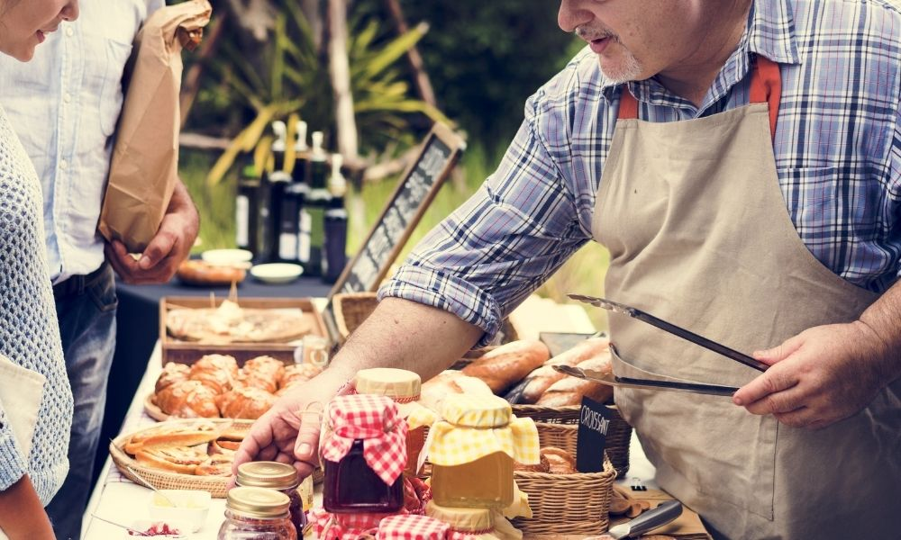

Apoyo al comercio local para fortalecer la economía circular
Cada compra que realizas tiene un impacto directo en tu comunidad, el medio ambiente y el modelo económico que apoyas. Elegir el comercio local frente a las grandes cadenas significa optar por una economía más sostenible, donde los recursos circulan cerca y los sistemas productivos respetan ciclos naturales.
¿Por qué apoyar el comercio local?
- Reduce la huella de carbono: menos transporte y embalaje innecesario.
- Fortalece la economía local: el dinero circula en tu comunidad.
- Promueve productos de calidad: frescos, de temporada y sin intermediarios.
- Genera empleo cercano: apoyas a productores locales.
- Respeta ciclos naturales: sigue las estaciones y los ritmos de producción.
Durante la mayor parte de la historia humana, el comercio funcionó de forma local. Se consumía lo que la tierra proporcionaba según la estación, había relación directa con los productores, y el modelo económico se basaba en la proximidad. El comercio local recupera estos principios adaptados al contexto actual.
El efecto multiplicador del dinero local
Cuando compras en un negocio local, ese dinero se reinvierte en la zona. El panadero paga al agricultor local, este al transportista del pueblo, creando un ciclo económico que beneficia a más gente de tu entorno.
Del dinero permanece en negocios locales
Se reinvierte en la comunidad generando empleo y riqueza.
Del dinero en grandes cadenas
La mayoría sale de tu comunidad hacia cuentas multinacionales.
Dato: Por cada 100€ gastados en comercio local, 68€ se quedan en el barrio generando más empleo y servicios. En grandes cadenas, solo 43€ permanecen en la zona. El resto alimenta sistemas externos que no dependen del bienestar local.
Cuanto más dinero circula localmente, más resiliente es la economía de la comunidad. Es la diferencia entre un sistema que se retroalimenta y una fuga constante de recursos.
La realidad detrás de lo que compras
Modelo de producción industrial
En las grandes cadenas de distribución, la producción se optimiza para maximizar beneficios. Los animales viven en espacios reducidos, sin acceso a luz natural ni libertad de movimiento. Reciben hormonas para crecer más rápido y antibióticos preventivos debido a las condiciones de hacinamiento. El objetivo es producir al menor coste posible, independientemente del bienestar animal.
Este sistema genera problemas medioambientales (contaminación por residuos y transporte) y sanitarios (uso excesivo de antibióticos que genera resistencias). Además, la comida pierde calidad nutricional al priorizar variedades que aguanten largos transportes en lugar de sabor o propiedades nutricionales.
Modelo de producción local
En las granjas locales, los animales suelen tener más espacio, acceso a exterior y alimentación más natural. Los productores conocen sus animales, controlan mejor las condiciones sanitarias y respetan ciclos naturales de cría. Esta diferencia se refleja en la calidad del producto final.
Los productores locales tienen un incentivo directo en mantener la calidad: su reputación depende de ello. Si un animal vive en malas condiciones o recibe demasiados antibióticos, eso afecta a la calidad de la carne y, potencialmente, a la salud del consumidor. Es una relación de responsabilidad directa.

Conclusión práctica: No es solo una cuestión ética, sino de calidad y salud. Los productos de animales criados en mejores condiciones tienen mejor perfil nutricional, menos residuos de antibióticos y mayor sabor. La diferencia es objetivamente medible.
Impacto ambiental: análisis de costes reales
Un tomate local recorre 20 km hasta tu casa
Menos transporte significa menos emisiones de CO₂. Se cosecha maduro, conservando nutrientes y sabor.
Un tomate de supermercado recorre más de 1.500 km
Requiere refrigeración, embalaje y conservantes. Se cosecha verde para soportar el viaje, perdiendo propiedades.
Los ecosistemas naturales funcionan con ciclos cortos. Un árbol no transporta sus frutos miles de kilómetros: caen cerca y alimentan el entorno inmediato. Aplicar esta lógica al comercio reduce desperdicios, emisiones y pérdida de calidad. Es simple eficiencia termodinámica aplicada a la economía.

¿Cómo puedes apoyar el comercio local?
Paso 1: Identifica los comercios locales
- Busca fruterías, carnicerías, panaderías y pescaderías de barrio.
- Visita mercados municipales y ferias de productores locales.
- Pregunta por el origen de los productos que vendes.
Paso 2: Cambia tus hábitos de compra
- Prioriza productos de temporada y proximidad.
- Compra a granel cuando sea posible para reducir plásticos.
- Pregunta el origen de los productos antes de comprar.
- Valora la calidad sobre la estética perfecta del producto.
Paso 3: Difunde y recomienda
- Recomienda negocios locales que ofrezcan buen producto.
- Deja reseñas que ayuden a otros consumidores.
- Participa en mercados y eventos locales cuando puedas.
Paso 4: Analiza el impacto de tus decisiones
- Considera que cada compra apoya un modelo económico concreto.
- Valora los costes reales: transporte, calidad, impacto ambiental.
- Reconoce el trabajo directo detrás de los productos locales.
- Entiende que fortalecer la economía local también te beneficia.
El comercio local puede tener un precio ligeramente superior en algunos productos, pero ese coste incluye menor huella ambiental, mejor calidad y fortalecimiento de tu entorno económico. Son factores que no aparecen en la etiqueta pero que tienen valor real.
Economía circular y sistemas naturales
El comercio local facilita la economía circular: un modelo que reduce residuos, optimiza recursos y mantiene el valor de los productos. Este modelo imita cómo funcionan los ecosistemas naturales.
En un bosque no existe el concepto de basura. Las hojas caen, se descomponen y alimentan el suelo. Los animales muertos nutren a otros organismos que devuelven nutrientes a la tierra. Es un ciclo cerrado donde cada residuo es recurso para otro proceso.
Cuando compras local, el ciclo económico se cierra en tu comunidad. Los productores reinvierten cerca, los residuos orgánicos se compostan localmente, y se reduce el gasto energético en transporte y embalaje. Es aplicar la lógica de los ecosistemas naturales a la economía humana.
- Menos embalajes plásticos y residuos de transporte.
- Productos más duraderos y con mejores propiedades.
- Menor desperdicio: se valora más lo que conoces de cerca.
- Cadenas de distribución cortas y eficientes.
Los sistemas que perduran son los que cierran ciclos, minimizan pérdidas y se basan en interdependencias locales. La globalización extrema depende de cadenas de suministro largas y frágiles. El comercio local es más resiliente ante crisis porque no depende de sistemas distantes.
Conclusión
Apoyar el comercio local es coherente con principios básicos: eficiencia energética, ciclos cerrados, calidad sobre cantidad, y fortalecimiento de sistemas resilientes. No es ideología, es aplicar lógica práctica a las decisiones económicas.
Si entiendes que los recursos son limitados, apoyar ciclos cortos tiene sentido. Si valoras la calidad y la salud, elegir productos locales es racional.
Cada compra dirige recursos hacia un modelo u otro. No hace falta cambiarlo todo de golpe, pero vale la pena analizar dónde van tus recursos y qué sistemas estás apoyando. Es simple coherencia entre valores y acciones.
El comercio local no es perfecto ni resuelve todos los problemas,
pero ofrece ventajas medibles: menor huella ambiental, mejor calidad,
economía más resiliente y relaciones más directas entre productor y consumidor.
Son datos, no opiniones. El resto depende de qué priorizas en tus decisiones.